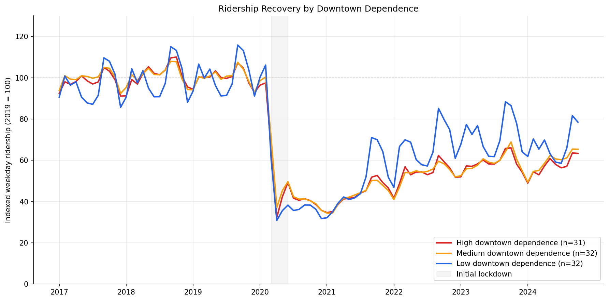
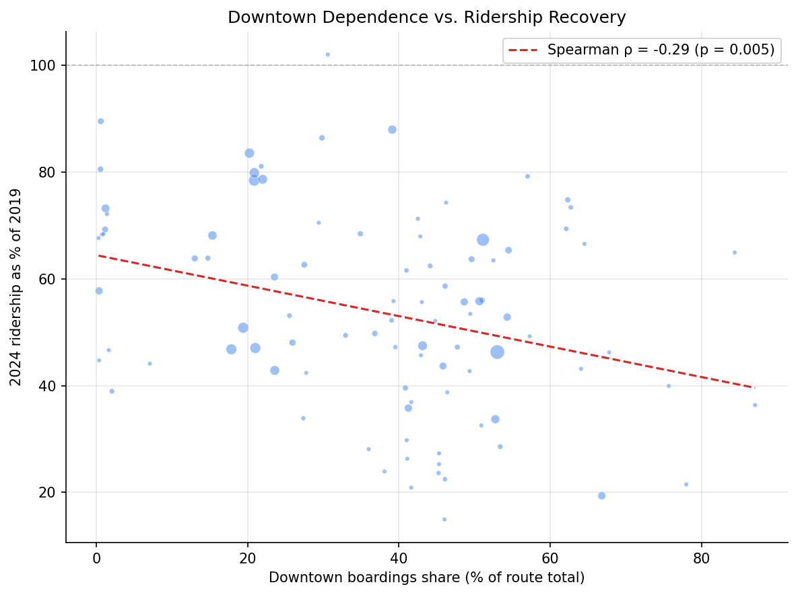
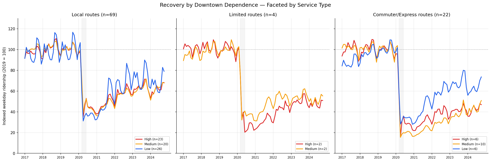
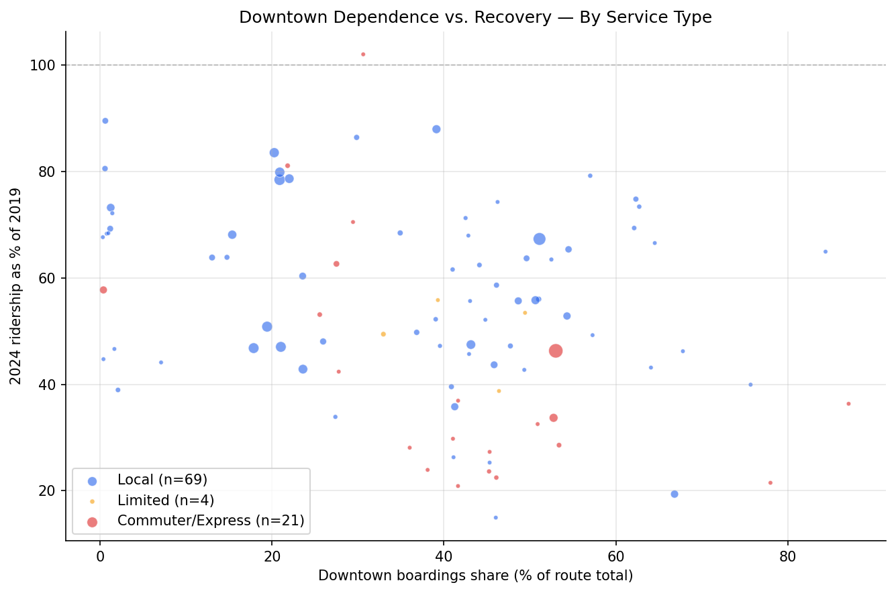

Analysis
38 - Downtown Recovery Gap
Ridership & Recovery
Coverage: 2017-01 to 2024-10 (from ridership_monthly).
Built 2026-04-03 19:31 UTC · Commit dc9e6e3
Page Navigation
Analysis Navigation
Data Provenance
flowchart LR
38_downtown_recovery(["38 - Downtown Recovery Gap"])
f1_38_downtown_recovery[/"data/bus-stop-usage/wprdc_stop_data.csv"/] --> 38_downtown_recovery
t_ridership_monthly[("ridership_monthly")] --> 38_downtown_recovery
01_data_ingestion[["Data Ingestion"]] --> t_ridership_monthly
u1_01_data_ingestion[/"data/routes_by_month.csv"/] --> 01_data_ingestion
u2_01_data_ingestion[/"data/PRT_Current_Routes_Full_System_de0e48fcbed24ebc8b0d933e47b56682.csv"/] --> 01_data_ingestion
u3_01_data_ingestion[/"data/Transit_stops_(current)_by_route_e040ee029227468ebf9d217402a82fa9.csv"/] --> 01_data_ingestion
u4_01_data_ingestion[/"data/PRT_Stop_Reference_Lookup_Table.csv"/] --> 01_data_ingestion
u5_01_data_ingestion[/"data/average-ridership/12bb84ed-397e-435c-8d1b-8ce543108698.csv"/] --> 01_data_ingestion
d1_38_downtown_recovery(("numpy (lib)")) --> 38_downtown_recovery
d2_38_downtown_recovery(("polars (lib)")) --> 38_downtown_recovery
d3_38_downtown_recovery(("scipy (lib)")) --> 38_downtown_recovery
classDef page fill:#dbeafe,stroke:#1d4ed8,color:#1e3a8a,stroke-width:2px;
classDef table fill:#ecfeff,stroke:#0e7490,color:#164e63;
classDef dep fill:#fff7ed,stroke:#c2410c,color:#7c2d12,stroke-dasharray: 4 2;
classDef file fill:#eef2ff,stroke:#6366f1,color:#3730a3;
classDef api fill:#f0fdf4,stroke:#16a34a,color:#14532d;
classDef pipeline fill:#f5f3ff,stroke:#7c3aed,color:#4c1d95;
class 38_downtown_recovery page;
class t_ridership_monthly table;
class d1_38_downtown_recovery,d2_38_downtown_recovery,d3_38_downtown_recovery dep;
class f1_38_downtown_recovery,u1_01_data_ingestion,u2_01_data_ingestion,u3_01_data_ingestion,u4_01_data_ingestion,u5_01_data_ingestion file;
class 01_data_ingestion pipeline;
Findings
Findings: Downtown Recovery Gap
Summary
Downtown dependence is a statistically significant predictor of worse ridership recovery, partially supporting PRT's claim that weak downtown business activity drags system-wide ridership. Routes with higher shares of pre-pandemic downtown boardings show worse recovery trajectories. However, the effect is modest (Spearman rho = -0.29) and explains only a fraction of the system-wide gap — even routes with minimal downtown exposure remain well below 2019 levels. Decomposing by service type reveals that the downtown effect is primarily a commuter/express route phenomenon: commuter routes recovered to just 34% of 2019 levels vs. 59% for local routes. Within local routes alone, downtown dependence is not a significant predictor of recovery.
Key Numbers
- Spearman correlation between downtown boardings share and 2024 recovery: rho = -0.29, p = 0.005.
- High downtown dependence (top tercile, 31 routes, median 53% downtown share): median 2024 recovery = 53.4% of 2019.
- Medium downtown dependence (32 routes, median 41% downtown share): median recovery = 47.3%.
- Low downtown dependence (31 routes, median 15% downtown share): median recovery = 63.8%.
- Kruskal-Wallis across terciles: H = 8.64, p = 0.013.
- Only the Medium vs Low pairwise comparison is significant after Bonferroni correction (p = 0.02). High vs Low approaches significance (p = 0.11) but does not clear the threshold.
By Service Type
- Local routes (n=69): median recovery = 58.6%, median downtown share = 41.1%.
- Limited routes (n=4): median recovery = 51.4%, median downtown share = 42.8%.
- Commuter/Express routes (n=21): median recovery = 33.7%, median downtown share = 41.6%.
- Kruskal-Wallis across service types: H = 12.71, p = 0.002 — recovery differs significantly by service type.
- Within-group Spearman (downtown share vs recovery): Local rho = -0.19 (p = 0.11, NS); Commuter/Express rho = -0.56 (p = 0.008).
- Partial Spearman controlling for service type: rho = -0.26, p = 0.010 — downtown dependence still predicts worse recovery even after accounting for route type.
Observations
- PRT's claim is directionally correct but insufficient as a full explanation. The negative correlation confirms that downtown-oriented routes have recovered less ridership. But the effect is modest — downtown dependence alone accounts for roughly 8% of the variance in recovery (rho-squared ~ 0.08).
- Even non-downtown routes are far from recovery. The low-dependence tercile sits at median 63.8% of 2019, meaning routes with almost no downtown exposure still lost over a third of their riders. This is not purely a downtown story.
- The medium tercile recovered worst, not the high tercile. This appears driven by commuter express routes (flyers like P12, P67, P71, P76) and express services (Y1, O1, G3) that fall in the medium range for downtown stop share but serve exactly the demographic most likely to shift to remote work. These routes lost 70-85% of ridership.
- Large local routes in the high tercile held up better than expected. Routes like 6, 12, 17, 81, 83 have >50% downtown share but recovered to 65-79% — likely because they serve diverse trip purposes (shopping, medical, transfers) beyond commuting.
- The best-recovering routes are high-ridership trunk lines with low downtown shares: 61A (84%), 61C (79%), 71B (80%), 59 (90%). These serve corridor travel that is less sensitive to office occupancy.
- The trajectory chart shows all three groups tracking closely until mid-2021, after which the low-dependence group pulls ahead. This timing aligns with the return of non-commute travel (errands, school, medical) while office occupancy remained depressed.
Service Type Decomposition
- Commuter/express routes recovered far less than local routes — median 33.7% vs 58.6% of 2019 levels. This is statistically significant (Kruskal-Wallis H = 12.71, p = 0.002) and represents the single largest explanatory split in the data.
- Downtown dependence and service type are partially confounded but not redundant. Commuter/express routes have similar median downtown shares to local routes (~41%), but their recovery is 25pp worse. The downtown effect operates through route type — commuter routes serve downtown commuters specifically, while local routes serve downtown for diverse purposes.
- Within local routes, downtown dependence has no significant effect (rho = -0.19, p = 0.11). Among local bus routes, having more downtown stops does not meaningfully predict worse recovery. The downtown recovery gap is primarily a commuter route phenomenon.
- Within commuter/express routes, downtown dependence is strongly predictive (rho = -0.56, p = 0.008). Among commuter routes, those with higher downtown share recovered even less — suggesting that peak-direction downtown express services were hit hardest.
- After controlling for service type, downtown dependence still predicts recovery (partial rho = -0.26, p = 0.010), but the effect is attenuated from rho = -0.29 to -0.26. Service type explains part but not all of the downtown dependence effect.
- The faceted trajectory chart reveals starkly different recovery shapes. Local routes show a gradual climb back toward 60-70% across all terciles. Commuter/express routes show a much flatter recovery, with high-downtown-dependence commuter routes plateauing around 30-40%.
Caveats
- Downtown share is computed from pre-pandemic stop-level data (FY2019), not current patterns. Routes may have shifted service since 2019.
- The stop-level CSV provides boarding counts, not trip purpose. A downtown boarding could be a commuter, a shopper, a transfer, or a medical visitor. We cannot isolate the "office worker" effect directly.
- Ecological inference limitation. Route-level associations do not prove that individual downtown commuters failed to return — only that routes serving more downtown stops recovered less ridership in aggregate.
- Ridership data ends Oct 2024. More recent recovery may differ.
- The 2 km downtown radius captures the Golden Triangle and adjacent areas (e.g., Strip District edge, North Shore). A tighter boundary around the CBD might sharpen the signal.
Validation
- Data source verified. Downtown scores computed from
wprdc_stop_data.csv(stop-level ridership with coordinates). Recovery trajectories fromridership_monthly(route-level weekday ridership). Both checked against prior analyses (33, 21). - Geographic scope matches. Downtown centroid and 2 km radius match analysis 33's definition. Pre-pandemic baseline (2019) matches analysis 21 and 37.
- Null handling. Routes with zero 2019 baseline excluded from indexing. Stop records with null lat/lon excluded from downtown scoring.
- Aggregates sanity-checked. System-wide recovery around 55-60% is consistent with analysis 37's finding of 57.6% via NTD data. Individual route recoveries match analysis 21's findings.
- Direction of effects checked. More downtown dependence associates with worse recovery — consistent with the remote-work hypothesis. Low-dependence routes recovering better is consistent with known patterns of non-commute ridership being more resilient.
- Small-sample routes present. Some routes (O5, 7, 71, 18) have very low baselines (<200 avg daily riders). These contribute equally to tercile medians despite less reliable estimates.
Output

Monthly indexed ridership (2019=100) for high/medium/low downtown-dependence terciles.

Route-level scatter of downtown boardings share vs 2024 recovery ratio with Spearman correlation.

Recovery trajectories faceted by service type (local, limited, commuter/express), showing downtown-dependence terciles within each.

Downtown share vs recovery scatter with points colored by service type (local, limited, commuter/express).
No interactive outputs declared.
Per-route downtown-dependence scores, service type classification, tercile assignments, and 2024 recovery ratios.
Preview CSV
Kruskal-Wallis and pairwise Mann-Whitney test results.
Preview CSV
Within-group Spearman correlations, Kruskal-Wallis across service types, and partial Spearman controlling for service type.
Preview CSV
Methods
Methods: Downtown Recovery Gap
Question
Does downtown-dependent ridership explain Pittsburgh's poor system-wide recovery relative to peer cities? PRT claims that weak downtown business recovery is a primary driver of the system's lagging ridership. If true, routes that depend heavily on downtown stops should show worse recovery trajectories than routes serving other parts of the network.
Approach
- Compute downtown-dependence score per route. Using pre-pandemic stop-level ridership, calculate the fraction of each route's weekday boardings that occur at downtown stops (within 2 km of the Golden Triangle centroid at 40.4406, -79.9959 — matching analysis 33's definition).
- Classify routes into terciles by downtown-dependence share: high (top third), medium, and low (bottom third). This avoids arbitrary cutoffs and ensures roughly equal group sizes.
- Build monthly ridership recovery trajectories. Using
ridership_monthly(weekday data, 2017-01 through 2024-10), index each route's ridership to its 2019 monthly average. Aggregate indexed ridership by downtown-dependence tercile to produce three recovery curves. - Statistical test. Compare 2024 recovery ratios across the three groups using Kruskal-Wallis (non-parametric, no normality assumption). If significant, apply pairwise Mann-Whitney with Bonferroni correction.
- Scatter plot. Show the relationship between downtown-dependence share (continuous) and 2024 recovery ratio at the route level, with Spearman correlation.
- Service type segmentation. Classify each route by service type using route ID naming conventions (
classify_bus_route): local (plain numbers), limited (L-suffix), and commuter/express (P/O/G-prefix flyers, X-suffix express, busway). Produce faceted recovery trajectories and scatter plots by service type. - Service type as covariate. Test whether downtown dependence predicts recovery after controlling for service type using: (a) within-group Spearman correlations for each service type, (b) Kruskal-Wallis across service types, and (c) partial Spearman correlation residualizing both downtown share and recovery on service type rank.
Data
data/bus-stop-usage/wprdc_stop_data.csv— stop-level ridership with lat/lon. Filtered totime_period == 'Pre-pandemic'andserviceday == 'Weekday'. Used to compute downtown-dependence scores.ridership_monthlytable — route-level monthly ridership. Filtered today_type == 'WEEKDAY'. Used for recovery trajectories.- Downtown centroid: (40.4406, -79.9959), radius 2 km (Haversine).
Output
output/recovery_trajectories.png— Monthly indexed ridership (2019=100) for high/medium/low downtown-dependence terciles.output/scatter_dt_share_vs_recovery.png— Route-level scatter of downtown share vs. 2024 recovery ratio.output/recovery_by_service_type.png— Recovery trajectories faceted by service type (local, limited, commuter/express).output/scatter_by_service_type.png— Downtown share vs. recovery scatter colored by service type.output/route_downtown_scores.csv— Per-route downtown-dependence scores, service type, and recovery ratios.output/statistical_tests.csv— Kruskal-Wallis and pairwise test results.output/service_type_tests.csv— Within-group correlations, Kruskal-Wallis by service type, and partial correlation results.
Source Code
|
Sources
| Name | Type | Why It Matters | Owner | Freshness | Caveat |
|---|---|---|---|---|---|
| data/bus-stop-usage/wprdc_stop_data.csv | file | Stop-level ridership with lat/lon, used to compute downtown-dependence scores per route from pre-pandemic weekday boardings. | Local project data owner not specified. | Snapshot file; refresh by rerunning its pipeline step. | May lag upstream source updates. |
| ridership_monthly | table | Primary analytical table used in this page's computations. | Produced by Data Ingestion. | Updated when the producing pipeline step is rerun. | Coverage depends on upstream source availability and ETL assumptions. |
Upstream sources (5)
|
|||||
| numpy | dependency | Runtime dependency required for this page's pipeline or analysis code. | Open-source Python ecosystem maintainers. | Version pinned by project environment until dependency updates are applied. | Library updates may change behavior or defaults. |
| polars | dependency | Runtime dependency required for this page's pipeline or analysis code. | Open-source Python ecosystem maintainers. | Version pinned by project environment until dependency updates are applied. | Library updates may change behavior or defaults. |
| scipy | dependency | Runtime dependency required for this page's pipeline or analysis code. | Open-source Python ecosystem maintainers. | Version pinned by project environment until dependency updates are applied. | Library updates may change behavior or defaults. |